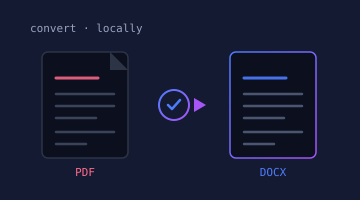

The SnapTera Suite · Utilities
SnapDox
PDF to Word, images to SVG, and every Office format in between — converted on your own machine, with nothing uploaded anywhere.
Runs on your computer — install it, then Launch opens it here. Checking whether SnapDox is running… Running on this computer — Launch opens it in a new tab. Not running on this computer yet.
SnapDox converts files on your own machine, so it has to be running there first:
python serve.py
Run that from the SnapDox folder, then open it at localhost:5000. Not installed yet? Get it on GitHub — it's free.
Free & open source · Windows, macOS, Linux · v1.0, August 2026
What it does
Your files never leave the room.
Online converters ask you to upload the document first. For a
contract, a drawing or an unpublished report, that is the whole
problem. SnapDox runs the conversion locally — a drag-and-drop
page in your browser, or a snapdox command for
batches — so nothing is transmitted, and there are no page
limits, watermarks or queues.
- PDF ↔ Word, with three layout modes for different documents
- Word, Excel, PowerPoint, ODF, RTF, HTML → PDF
- PDF → PNG, JPEG, TIFF, WebP at any resolution
- PNG/JPEG → SVG by real vector tracing, not an embedded bitmap
- Markdown and EPUB in and out, via Pandoc
- Formats with no direct route are chained automatically
- Reachable from your phone on the same Wi-Fi

PDF to Word
The conversion everyone gets wrong.
Most converters try to detect tables that were never there. On an ordinary two-column document that guess reads the columns as table cells and shreds the paragraphs across them. SnapDox lets you pick what the page actually is.
Default · Flowing text
Keeps the layout
Paragraphs, images and genuinely bordered tables. Right for almost every document.
Option · Detect tables
For grids
Also finds borderless tables — the right call for invoices, statements and datasheets.
Option · Plain text
Easiest to edit
Clean reading order, layout discarded. Columns are read down one side, then the other.
What it will not do
A scan is not a document.
A scanned PDF is a photograph of a page. There is no text inside it to recover, so converting one to Word can only ever produce a document containing a picture. SnapDox detects that case and says so, rather than handing back something that looks converted and is not. Convert it to images instead, or run OCR first.
Encrypted PDFs are handled the same way: SnapDox asks for the password rather than failing with a stack trace. It is a local tool with no accounts, no telemetry and no upload step — the conversion happens on your hardware and the result stays there.